Motion Graphs — multi-step recall cards
Approved learner cards rebuilt in the canonical S1 question-and-work-box layout. Each same-stem PNG shows the fully revealed method.
11 cardsLamprosMulti-step
Q001 · Distance versus displacement
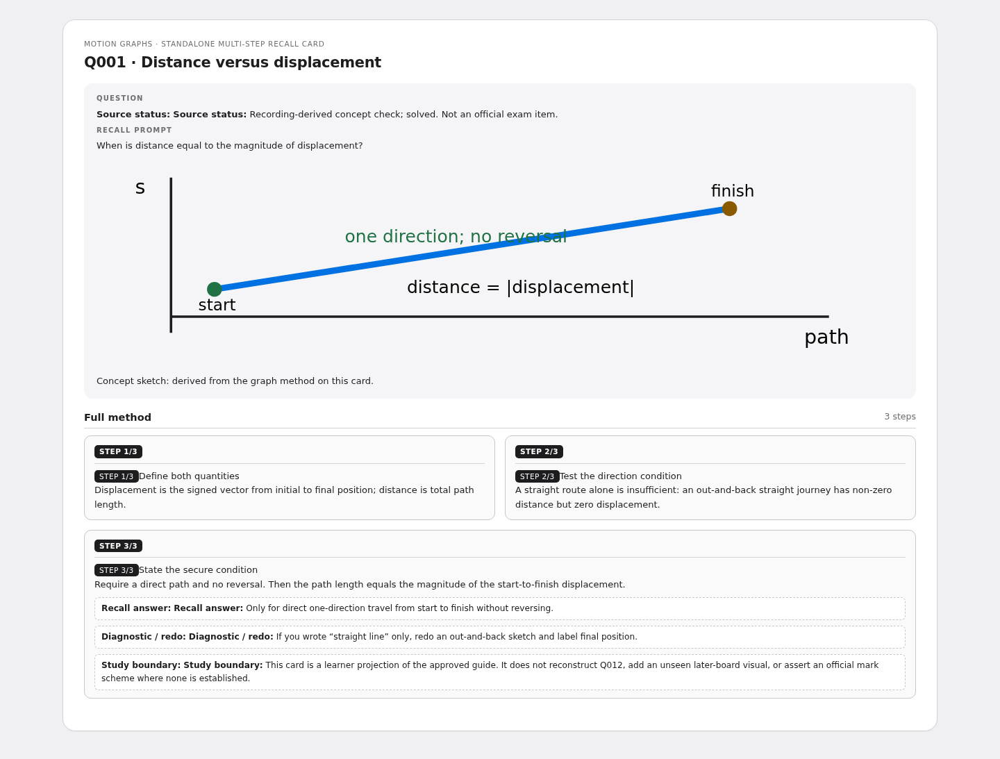
Q002 · Return to the start
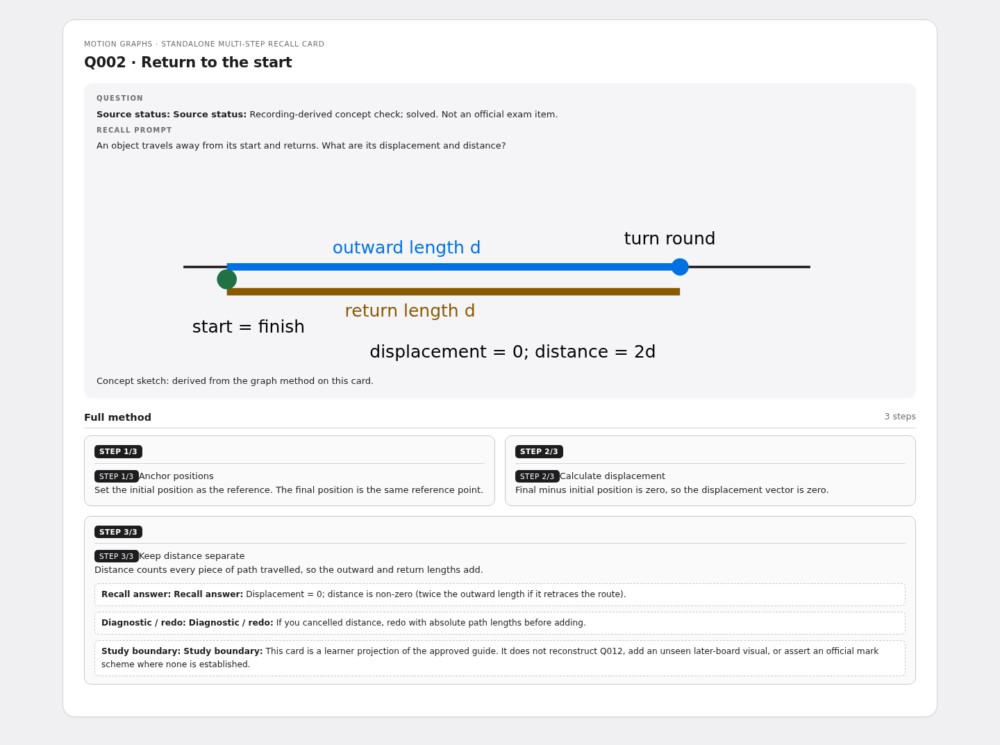
Q003 · a–t area and reversal
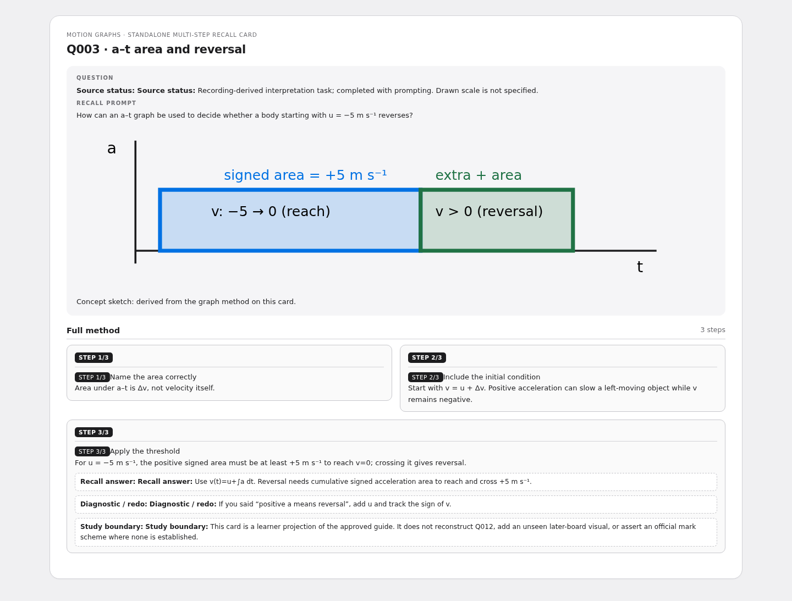
Q004 · Area under a non-negative v–t graph
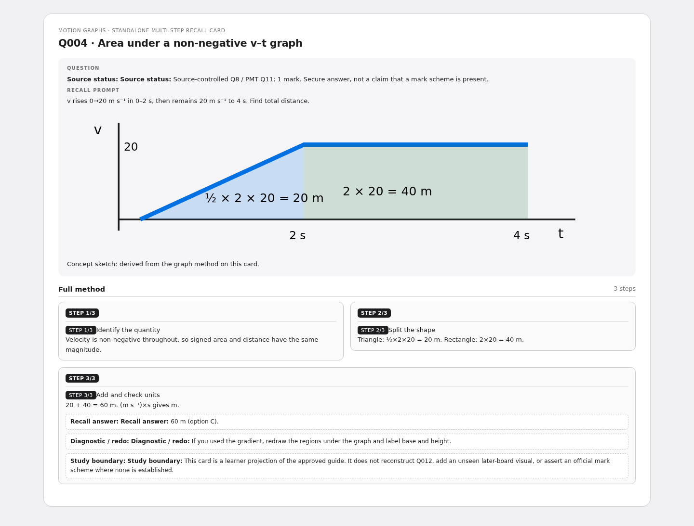
Q005 · Bounce graph: apex versus contact
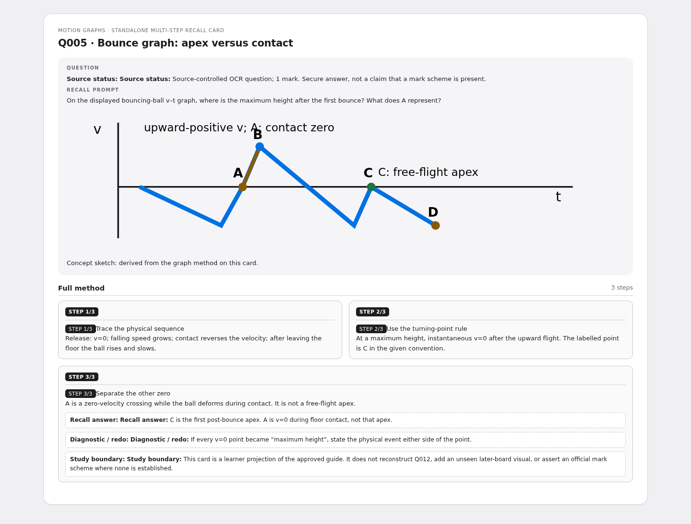
Q006 · Maximum velocity on s–t
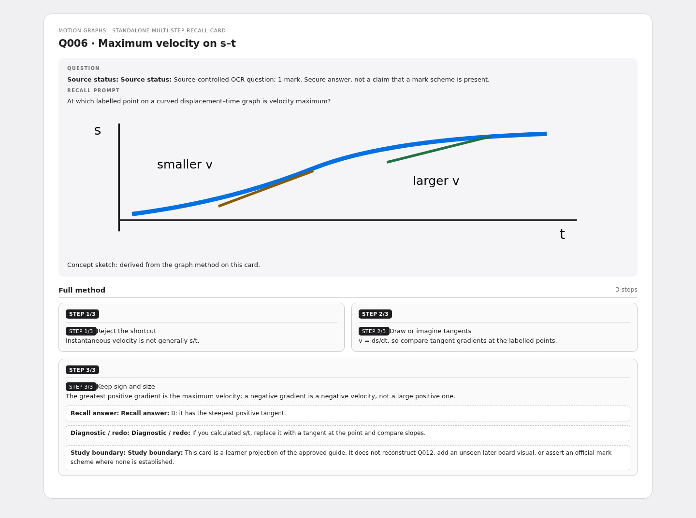
Q007 · Terminal velocity and drag
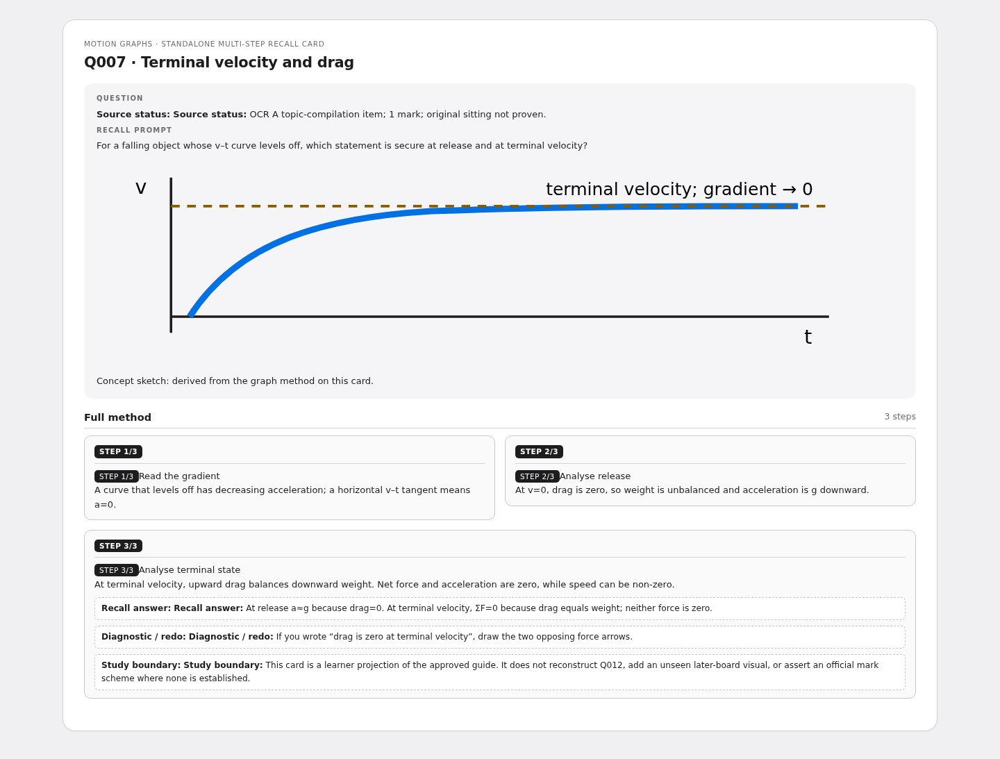
Q008 · What an accelerometer indicates
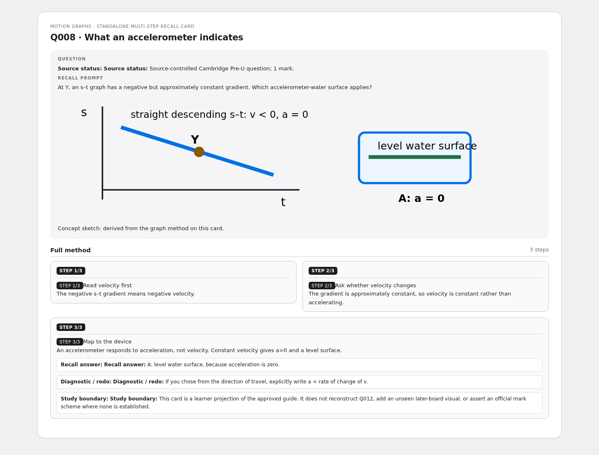
Q009 · Parachutist acceleration
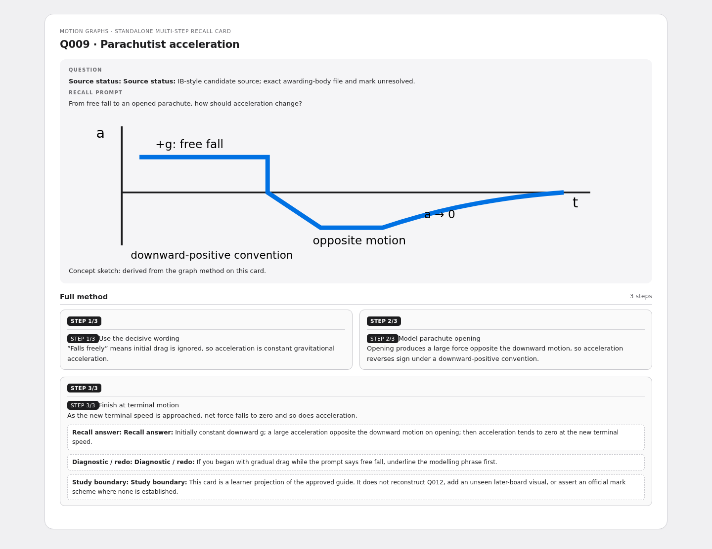
Q010 · Convert s–t to v–t and a–t
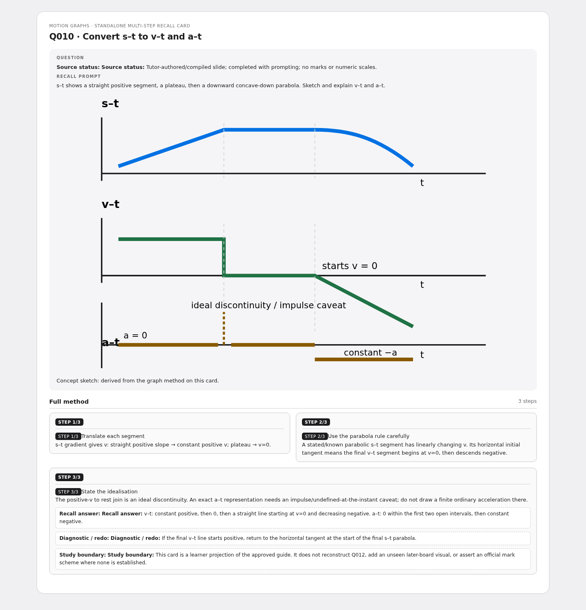
Q011 · Bouncing ball: v–t to s–t and a–t
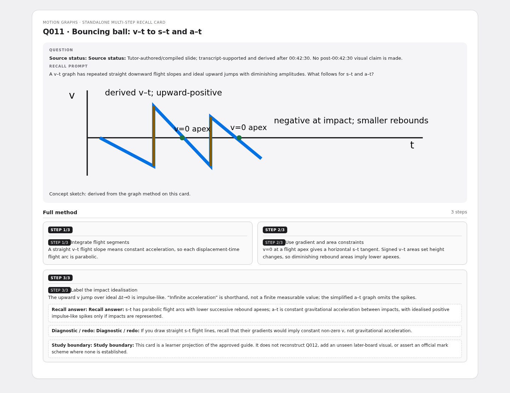